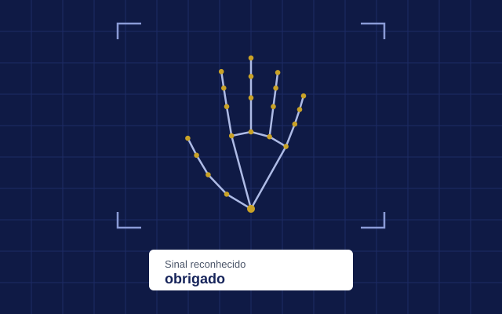

Inteligência Artificial
STL: tradutor de Libras para português
Sistema que reconhece sinais da Libras em tempo real pela webcam e traduz para o português, usando Inteligência Artificial e visão computacional. O sistema identifica os pontos das mãos do usuário, e um modelo de rede neural treinado com dados coletados pela equipe reconhece qual sinal foi feito. O resultado é exibido em uma aplicação web.
Premiado na FENIC e terceiro lugar na FEBRACE, na USP.
- Python
- TensorFlow
- Keras
- MediaPipe
- Flask
- HTML
- Problema
- A falta de intérpretes dificulta a conversa entre pessoas surdas e ouvintes que não conhecem Libras.
- Público
- Pessoas surdas usuárias de Libras e ouvintes que precisam se comunicar com elas.
- Minha contribuição
- Desenvolvimento do modelo de Inteligência Artificial que reconhece os sinais a partir dos pontos das mãos.